A native administrator's actual single mention, or a verifiable reply to the
member's original message in the same group, followed by 黑名单 directly records
the entry. It does not immediately mute or kick. Only a later trusted actual
rejoin uses this robot/group's confirmed duration. Remove membership in the other
list before adding; owners, administrators and bots remain protected.
Blacklist removal does not unmute, and unmuting does not remove the entry.
At23:39:48 Beijing time, deployed readback confirmed moderation-rule alignment and a seven-day/10,080-minute future-rejoin duration for three explicitly authorized groups, plus one authorized whitelist removal that retained its blacklist entry. This is a scoped deployment snapshot, not a change to the29-day product default or automatic propagation to other groups or member lists. Image/text plans and keyword auto-replies were not copied. Offline regression passed, but no actual group command or native sanction was exercised in this round. See the maintenance record for scope and evidence. Earlier dated “no member changes/overlap retained” records below describe their own earlier rounds only.
Full-restart loading completed at22:59:23 Beijing time (14:59:23 UTC), PID4071721, active/running, NRestarts=0. At22:59:51 all22 protected surfaces and config matched. Python:1,794 passed,2 skipped,1 audioop warning; UI:177 unit and 9 browser passes. No real group members were added, removed or sanctioned; no real full-chain load test occurred. At23:13:07 all six list-read APIs across three formal groups passed, without preview/commit; historical overlaps remain. Display-only conflict flags loaded by plugin reload with the same PID;218 unit passes overlap with1,794, not additive. All22 protected surfaces/config matched again at23:14:32. The original12 needs_review records remain without automatic retry. Passive and isolated performance measurements retain their limited scope, not a production end-to-end guarantee; see the latest maintenance record. This documentation generation does not synchronize dist. New blacklist/whitelist additions are mutually exclusive for the same bot, group and UID. If the other list already contains the member, reject with “remove from the whitelist first” or “remove from the blacklist first”; never automatically transfer or delete the other entry. Earlier permission to overlap explains historical records only: retain existing overlaps, keep blacklist precedence and allow each entry to be removed separately. For departed or renamed members, use the corresponding list-row removal icon → preview → personal confirmation, or search saved entries in removal mode by current name, saved old name or exact UID. Select the group first in DMs, then search/select the unique saved entry and confirm its preview. UID lookup targets existing records only. Addition still searches the real current roster by name, never guesses from a UID; native group blacklist addition still requires a real reply/mention. Removal affects only the selected list, never the other list, and blacklist removal does not unmute. The ordinary24-hour cap, blacklist rejoin duration and authority/confirmation boundaries are unchanged. The20:02:56 evidence below predates this fix.
The October 23, 2026 requirement is now the current contract: blacklists never kick; every trusted actual rejoin directly mutes the member in the group. Code loaded after the full restart at 20:02:56 Beijing time, October 23, 2026 (PID3317496, NRestarts=0); the online configuration workflow passed. No new actual rejoin/mute acceptance was performed. Offline tests and settings readback do not prove native sanctions. The 16:53:53 Beijing-time loading and subsequent three-kick acceptance belong to the earlier policy, not this rule. The user's later “看得见” (“I can see it”) is recorded as user-confirmed phone display for that presentation only, not other screens or new-policy acceptance. Actual expiry after 29 days has not been verified; displayed duration, platform acceptance and current mute status do not prove that future expiry occurred. Entries bind the same receiving robot account, same group and verified target identity, never another group or robot.
黑名单, or actually mention one target and send 黑名单.
Addition records the entry only; it does not immediately punish a current member,
by either kicking or muting.
Nicknames, raw UIDs, typed @name, copied quotations and multiple targets are invalid.黑名单列表 reads this scope; 黑名单 without a verified target
returns corrective instructions.
In-group 移除黑名单 also requires a native reply or actual mention of one target,
not a direct name argument.群列表, then 选择群 INDEX. Search real current group members
with 添加黑名单 NAME, or saved entries with 移除黑名单 CURRENT_NAME/SAVED_OLD_NAME/EXACT_UID;
send 选择黑名单 INDEX. Check the robot, group and unique target in the preview,
then personally send 确认黑名单 TOKEN. Same-name matches are never auto-selected;
unrelated member numbers or another group's token cannot be reused.群列表 and
选择群 INDEX first. Send 黑名单禁言时长 N分钟, 黑名单禁言时长 N小时
or 黑名单禁言时长 N天, for example 黑名单禁言时长 29天.
The converted duration must be 1..41760 whole minutes; the default is
29 days = 41,760 minutes. Zero, negative, out-of-range or sub-minute values
are invalid. Check the robot, group and converted minutes in the preview, then
personally send a new 确认黑名单 token message using that preview's token.
The setting command and preview do not write. Settings are isolated by robot
and group; changing group, cancellation, revocation or revision changes require
a fresh preview, never an old token.群管理 → 规则 → 黑名单设置): read/search → check the
unique target and current revision → preview → personally confirm commit.
Duration edits also require preview and confirmation. Opening, reading,
searching or previewing does not save or punish. Ordinary group managers do
not acquire dashboard login rights.Only trusted actual rejoins after addition trigger enforcement. The first and every later rejoin use the confirmed duration for this robot/group to mute and retain the member, never kick, regardless of historical successful-kick counts. Ordinary messages, duplicate join notifications, restarts and repeated adds do not punish or renew a mute. Duration changes affect only new trusted actual rejoins after confirmation. They never reset existing mutes, punish current members, replay historical notices or create daily mute renewals. An unknown receipt pauses the affected flow for reconciliation against the original receipt and platform state; never retry, erase history or invent success. Removing an entry does not unmute an existing mute. An independent unmute does not remove the blacklist entry.
| Earlier policy (October 23, 2026 history only) | Current contract (loaded; actual rejoins untested this round) |
|---|---|
| First three actual rejoins were kicked, counting successful kicks | Every trusted actual rejoin directly mutes and retains the member; no kicking |
| Fourth and later rejoins used a fixed 29-day mute | First and later rejoins use this robot/group's confirmed duration: default 29 days, configurable 1..41760 whole minutes |
| Successful-kick count selected the sanction phase | Historical counts and receipts remain evidence, not inputs selecting a new sanction phase |
| Dashboard Group Management → Rules → Blacklist | Group Management → Rules → Blacklist Settings; list/duration edits still require personal preview confirmation |
Owners, administrators and bots are protected. The only exception is an exactly authorized isolated fixture, bounded to its robot, group, target, action and test window; it creates no production exception. The speech whitelist does not override the blacklist. Ordinary automatic kicking remains prohibited and the ordinary 24-hour mute cap is unchanged. The 1..41760-minute range belongs only to this blacklist rejoin path. Guidance AI explains usage only: it cannot read live lists, execute, confirm on the caller's behalf or claim success.
No permission: send 我的权限; ask the group owner to verify native caller/bot roles
and the service operator to check this robot/group's management/action grants.
Never share the dashboard password or self-authorize in chat.
Wrong group: send 取消, repeat 群列表 and 选择群 INDEX, then search and preview
again with a fresh token. Failed/inconsistent roster reads stop the flow, never
mean an empty list or justify guessing by nickname.
Evidence levels: final offline regression: 1,229 passed, 2 skipped and one audioop warning. Subsequent permission-hint tests: 257 passed, 2 skipped; coverage overlaps and must not be added. Offline bounds/conversion, isolation, confirmation and protection coverage is not native-sanction acceptance. All three concurrency fixes are verified: old notices cannot use a new duration, the final synchronous permission fence, and proven-unsent operations no longer misclassified as unknown. Genuine unknowns remain preserved, without retry. At20:10:45, test group1459282 passed online read/preview/personal commit/readback from41,760 to60 and back to41,760 minutes. Previews did not write; default restored. The first two reads were protective409 refusals because the receiver was a member, without writes. Specific permission hints were added; member actions require a new search, duration actions a new preview. No new kicks or actual mutes occurred. The20:24:00 protection review matched other protected surfaces and retained test tenant217→220 plus audited concurrent Dingfeng dashboard versions4/5. Raw tenants hashes differ; this is not a claim that formal groups never changed. See the maintenance record. New actual rejoin/mute acceptance and future actual expiry remain unverified. Historical three-kick evidence and phone confirmation retain their separate scope. This documentation update performs no production operations; guide/index/PDF regeneration does not synchronize dist.
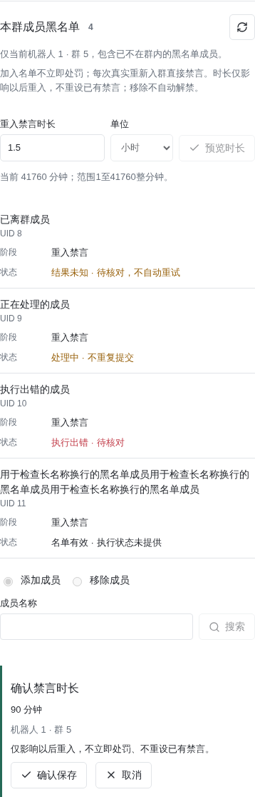
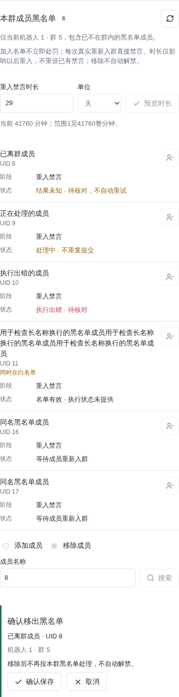
The entry remains Group Management → Rules → Keyword Replies and Scheduled
Messages. Each keyword reply accepts one static JPG, PNG or WebP image, up to
5MB per original, with upload, paste, drop, replacement and removal. Images are sent
before optional text. An unacknowledged image stops the caption; unknown or partial
delivery pauses for reconciliation without automatic replay and remains subject to the rule cooldown.
Image references are scoped to the uploading account and group. Reactive keyword
images do not require proactive-send grants. Text edits through existing DM commands
retain the image; keyword images are maintained in the form, not automatically
captured from ordinary private messages.
Assets stay private and deduplicate within this robot/group scope, without a public
image host or cross-group/robot reuse. Without dashboard permission, ask the operator
to attach the keyword image in this group's form. No new keyword-image DM intake
command is introduced; the existing 广告图片 plan-number is for scheduled ads only.
Three messages · hourly cycle selects three existing plans or creates three disabled drafts. Each plan keeps its own content and image. Defaults are minute 00,20,40: one message every20 minutes, each message once per60-minute cycle. Different gaps are possible:00,15,45 gives15/30/15 minutes including the wrap into the next hour. The selected plans and minutes must be distinct and cyclically ordered. Applying replaces their old timing with24 daily Beijing-local fixed times, running all day; retain individual window schedules for limited hours. Apply three times only changes the local draft and preserves enabled states. Preview and explicit confirmation are still required. Deployment does not alter existing configurations, fill content, enable plans or send messages. These are three independent plans, not three images sent together by one plan. For new plans, explicitly enable each, check its content/images and minute 00/20/40, then preview and confirm save. Applying times alone does not enable anything.
Upload failure: check static JPG/PNG/WebP format, the 5MB original limit, selected robot/group and permission. Wait for progress or timeout recovery, check for an existing asset/save receipt, then personally reselect, preview and confirm. An unknown result pauses for reconciliation, not duplicate upload or token submission. Unsaved or disabled content is not published. For a wrong group, cancel the draft or pending intake before selecting again; missing access never warrants password sharing. This pass only updates guidance. New integration and phone acceptance still need their own planned checks; the dated screenshots/evidence below do not establish them.
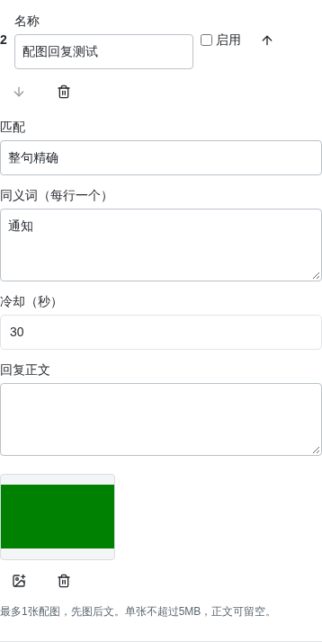
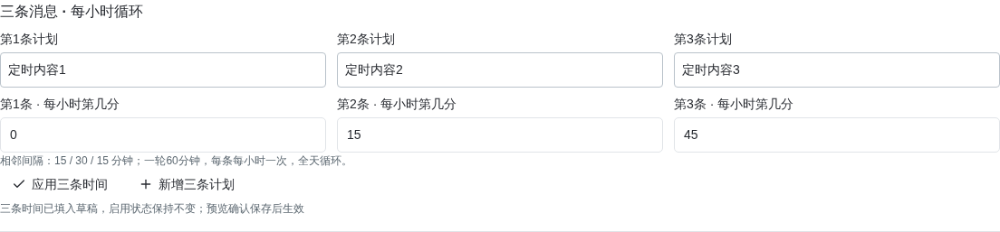
Use Group Management → Rules → Keyword Replies and Scheduled Messages.
Upload, preview, reorder, replace or delete up to three static JPG, PNG or WebP
images per plan, at most5MB per original. Text is optional and may include links.
Each occurrence sends exactly one image, rotating1→2→3→1 after acknowledged
delivery only. Unknown or partial delivery pauses; reconnects/restarts never
backfill missed slots. Times use Beijing time. Enable, preview and personally
confirm the configuration. This is deterministic and makes no AI calls.
In DMs, administrators send 群列表, 选择群 序号, then a relevant direct command:
规则, 关键词回复 or 定时发言. 定时广告 and the 管理 prefix remain compatible.
Image upload, plan/activity parameters belong in forms, not mandatory nested
chat choices. Administrator guidance derives from the current command catalog,
offers a short relevant entry and never saves settings, consents to charges or
confirms payments. Never share the dashboard password. Authorized group managers
can instead select a group by DM, send 广告图片 plan-number, then one static
image. A preview is returned; only their explicit 确认广告 token saves it.
Confirm each before adding another, up to three. Unrequested pictures are ignored.
Intake expires after five minutes and is invalidated by cancellation, group changes,
plan edits or revoked permission. Downloads use only the reviewed native asset host,
never caller URLs. File selection, paste and drop share the same page workflow.
Reading times out after15 seconds and upload after45; controls recover, late results
are ignored and no automatic retry is made.
See Component Governance and Pilot for declarations, recovery controls and private-message batching.
Updated October 22, 2026, Beijing time. This page describes the new configuration contract; deployment and native acceptance require their own recorded evidence. Earlier core-audit regression: 7,392 passed, 52 skipped, zero failures. Following user authorization, AstrBot was fully restarted at 03:56:52 Beijing time on October 22, 2026, loading all three media parsers and this audit's fixes. This is not new live sanction acceptance. Group-AI switches and charge tables are unchanged. The independent cashier was subsequently retired. Current image rotation, direct-DM acceptance and unconfirmed model timeouts are recorded separately in the maintenance record, not implied by that earlier audit.
| Feature | Server-owned | Delegated authority |
|---|---|---|
| Administrator guidance | Configuration, persona, permission manual | Read-only consultation |
| Group / warm-group AI | Model, persona, tools, modes, topic, hours, group knowledge | Toggle already provisioned AI for one's authorized group only |
| Business support | Model, credentials, tools, safety boundary, default template | Verified activators edit their own dedicated business; legacy account editors remain compatible |
| Keyword replies / advertisements | Send grants, boundaries, audit | Authorized managers maintain their own group's content |
Successful native activation/claim creates one dedicated support service per verified activator, named after the activator with a stable UID suffix. Later groups, including groups on other robot accounts, reuse its configuration, persona and business content. Nicknames are display-only. The receiving account must independently verify the owner's UID and trusted peer before editing. Other group managers, finance roles, subscriptions and dashboard login never grant editing rights. Revocation, departure, pause, epoch changes or support suspension invalidate prepared changes, pending batches and in-flight replies.
In AI services → Customer support → Business ownership, select a dedicated business, the new-owner template, or legacy account support. The template is copied only on first creation; later template edits never overwrite existing business content. Default links and commercial knowledge are empty. The private menu "本机器人业务客服" is now "专属与账号业务客服"; existing editing and confirmation commands remain compatible. Interrupted provisioning retains ownership and reuses the created native configuration on retry. Existing groups and server rules-only admission do not infer the original activator from current managers or nicknames, or automatically migrate legacy support. Administrator guidance has a separate server profile. Dedicated personas enable no generic tools or skills. Personal notes remain stored but are not migrated into business support. Business content is shared, not conversations: history remains isolated by receiving robot, actual sender, role and profile/business-content revision.
The business selector lists only dedicated businesses bound to the selected robot, legacy account support and the default template. AI parameters load and save for that selected business rather than always editing legacy support. Configuration and persona names are read-only, without cross-business or other-platform options. Administrator guidance and group/warm-group AI also retain fixed bindings. Direct API rebinding is rejected; missing bindings require server provisioning. Only the server maintains model and generation settings; private business editing remains restricted to authorized content fields.
For a verified owner, creating or verifying dedicated support updates its native configuration display name and dedicated persona name to the current owner's name. It preserves the configuration ID, persona content, business data and group bindings. Old personas remain for historical references. Legacy accounts without an explicit owner are not renamed or reassigned by guessing from manager nicknames, and no support-editing authority is granted by this change.
Profile provisioning and plugin startup idempotently synchronize a versioned
admin_manual knowledge scope. Procedures cover private group selection, menus,
moderation, keyword replies, ads, blacklists, scheduled muting, rules-only trials, support
editors and separate finance authority. Command entries derive from the shared
capability declarations. Unmanaged server-authored titles remain intact; personal,
group and business-support knowledge is never copied. Relevant snippets are
retrieved and injected into the actual request. Updates invalidate old snapshots.
Missing references never justify invented syntax, menu numbers or live settings.
The guidance panel reports resolvable configuration and manual synchronization counts without model calls or quota use. This checks configuration and versioned references, not user allowance, provider balance or native conversation acceptance. Guidance explains usage without operation tools; live queries and modifications still require the user's fixed commands. Answers prioritize short steps for the current question while retaining complete arguments and personal preview/confirmation. Literal keyword triggers such as "链接"/"网址" do not mean arbitrary URL detection. Truncated output or supplier reasoning copied into the answer is neither delivered nor saved as a partial operation example. A fixed no-operation notice replaces it without another call.
Start privately with /chat; /exit or cancellation ends consultation. Fixed
commands, menus and confirmations run before AI. Verified independent roles route
to administrator guidance; other users use a live business binding on the receiving
robot. One business routes automatically; multiple businesses require "客服列表"
then "选择客服 序号". The selection lasts 15 minutes; "退出客服" restores role routing.
An administrator may explicitly select read-only business consultation without new
authority. Ambiguous, revoked or suspended bindings never call the model or fall
back to another business. Unmigrated robots retain legacy account support.
Rules-only groups do not gain AI access; guidance still requires its separate grant.
Support injects only the selected business's confirmed wording, links, style, length,
knowledge and scoped retrieval. It never reads another business, administrator
manual or personal notes. Empty business content is not a
finished business-support setup; brands, contacts and links must not be invented.
This plugin sends controlled model requests rather than running the generic AstrBot Agent. Only allowlisted model, persona and generation settings are read. Generic configuration-page knowledge, tools and skills are not automatically used. Neither private role has management, finance, code, generic network or PC28 tools. Live queries remain fixed commands sent by the user. Actual model calls retain quota, pricing, permission, revocation and delivery checks; answers never execute configuration changes.
private_batches.py freezes the account guard and session generation before
awaiting identity verification, then rechecks them. Exit, cancellation or account
switching cannot attach old input to a new session batch. After reading,
native_conversations.py rechecks the current conversation ID; checking and
updating are still not atomic compare-and-swap.
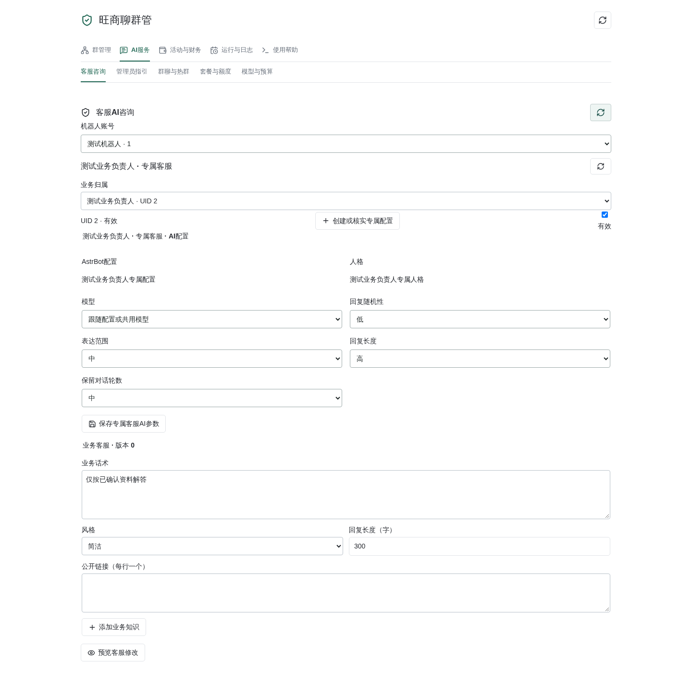
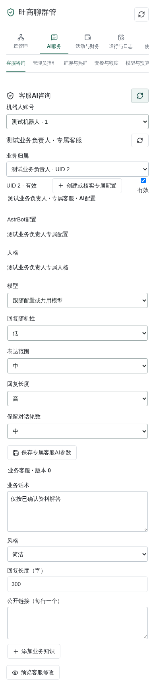
Without model-based review, trusted new-message evidence for high-confidence advertising, keywords, all-terms combinations and flooding uses an independent, bounded queue. Chat and AI reply throttling cannot stall this queue. Execution still rechecks current group rules, native roles, target identity and speech exemptions; owners, administrators and managed bots remain protected. Duplicate messages are not sanctioned twice, unknown receipts are not retried, and advertising from before a plugin reload is not replayed. Combination rules still require every term; their names are labels, not matching terms. The existing three-successful-recall warning period remains unchanged. A rule match or completed worker is not proof that the platform accepted a recall or mute.
The server owns versioned DEFAULT_GROUP_RULES in open_store.py. Version 1
enables advertising moderation and flood protection with 21 high-risk phrases
and eleven all-terms literal combinations for payment-screenshot solicitation,
account rental, verification-code collection, video-posting recruitment and
project-group promotion. Broad words, isolated numbers and domain suffixes are
not standalone template triggers. Reporting, quotation and anti-scam protections
continue to apply.
Native activation/claim and server rules admission initialize the template within the existing authorization transaction, only when the scope still has untouched empty rules. Customized rules are preserved. Discovery or joining alone does not apply it, and failed admission, native-role or version checks cannot commit it. Groups receive independent copies. Editing, resuming or restarting never replaces other groups' settings; a template update does not bulk synchronize existing groups. Server admission confirmations bind template content and version, so changes require a new preview. Activation audits record actual rules and template version. Historical messages are analyzed offline, never replayed or sanctioned.
Templates contain no administrators, support editors, business links, knowledge, AI switches, subscriptions, budgets, finance grants, ad content or schedules. Business keyword replies and scheduled ads are not created or enabled. Existing native-role, action-grant and sending checks still apply; matches never enable automatic kicking.
For a proactively joined group, the server can select one live native owner or
administrator and preview/confirm rules admission in Admission and rules.
rules_provision_preview and rules_provision accept only account, group, tenant
version, manager UID and the confirmation token. The token binds the dashboard
actor, membership epoch, version and verified sender identity. Expiry, revocation
or identity changes invalidate it.
Admission preserves customized rules or initializes the template above, preserves other groups, enables scoped rule actions and sending, and never fabricates an inviter or grants Plus, finance or support editing. New business keyword replies and advertisements remain disabled. A durable rules-only flag blocks group AI, mentions, autonomous/idle responses and PC28. Private users whose only management scope is rules-only receive fixed menus, not automatic AI consultation or administrator guidance. Independent finance/support roles and other groups are not changed. Moderation uses literal rules rather than a semantic model.
Validity and authority checks precede fixed commands, menu parameters and confirmations; group keywords run next; only unconsumed messages reach AI. A matching keyword consumes even an @ mention, cooldown, disabled replies or send failure. No model fallback, duplicate answer or model charge follows.
In Admission and rules or Group AI, select an active rules-only group,
choose 预览升级正式AI, verify the bot account and group, then 确认升级.
The server-only ai_admission_preview and ai_admission actions accept only
account, group, tenant version and a confirmation token. Chat commands and
ordinary group administrators cannot invoke this control-plane operation.
The group and service must be unpaused. A complete live roster must verify the
bot's native management role and every existing authorized administrator.
The single-use ten-minute preview binds the dashboard actor, full tenant
snapshot, membership epoch, administrator transport identities and service
version. Departure, revocation, rule edits, identity changes or version conflicts
require a new preview.
Confirmation removes only that group's rules-only restriction and increments its tenant version. Moderation rules, managers and invitation attribution remain unchanged. It creates no subscription, payer consent, support-editor or finance grant, and does not change other groups. Group AI and all speaking modes remain off; inconsistent legacy enabled switches are disabled. Topics, hours, limits and unknown-result blocks are retained. The payer must still personally confirm shared usage, and model, budget and active shared-quota checks still apply before AI is enabled separately. Admission is not a plan upgrade, and server nomination is not payer consent.
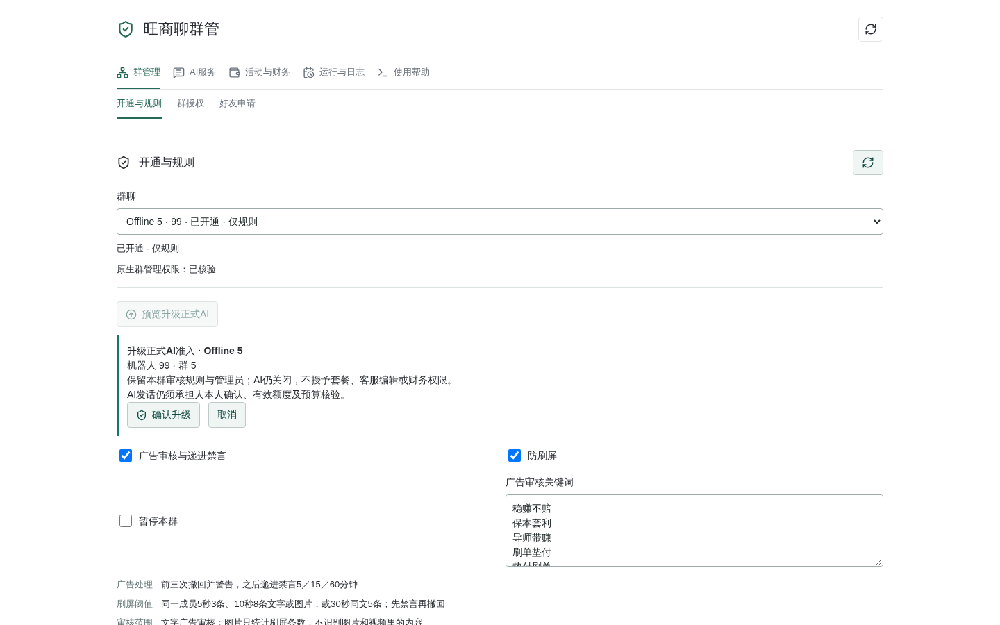
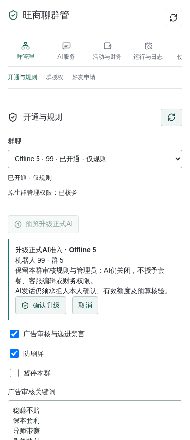
The exclusivity/removal fix loaded with the22:59:23 full restart; see the evidence limits above. In Group Management → Rules, select an activated group and use add mode under 本群发言白名单 to search the real current roster by name, select, preview and confirm. Addition accepts no arbitrary UID, NIM or cross-group identity; homonyms show UIDs for verification. Removal mode searches saved entries by current name, saved old name or exact UID, including departed/renamed members. The list-row removal icon also requires preview/confirmation and never deletes the other list's entry. The private menu is 审核规则 → 发言白名单; select an authorized group first. Group commands use the current group:
白名单
添加白名单 member-name
移除白名单 CURRENT_NAME/SAVED_OLD_NAME/EXACT_UID
选择白名单 search-result-number
确认白名单 preview-token
Addition verifies complete native membership at search, selection and confirmation; removal checks saved entries in this group without requiring the target still to be a member. Both recheck actor/bot authority and revisions. Previews expire after ten minutes and chat confirmation requires a new message. Changing groups, searching again, cancellation, actor/bot permission changes and whitelist version conflicts invalidate old choices. Target membership, identity or name changes invalidate addition choices only. Removal targets bind only the saved UID, peer and list version, so a target's rename or departure does not invalidate removal. Current actor and bot permissions are still mandatory. Addition still uses a versioned group scope, name query, server-issued selection token and result index, never an arbitrary member identity. Exact UID removal lookup only locates an existing entry in that scope, never authorizes addition. Changes persist with a separate audit; restart and upgrades preserve existing server-maintained entries.
October 22 source update: after authority_guard(), the member_whitelist guard
compares service.store.tenant(account, group) with the complete original tenant
snapshot and rejects differences as tenant_changed. The same guard runs before
writing and before transaction commit, covered by the final regression and loaded
by the full restart.
The exemption affects only this robot's automatic advertising, media and flood sanctions (mute and recall) in this group. It grants no management, support editing, AI allowance or finance rights and does not affect other administrators' manual actions. Adding an entry does not unmute an existing sanction; use the separately authorized unmute workflow. Administrator guidance explains the server manual and fixed commands without changing the list from natural language or inventing success.
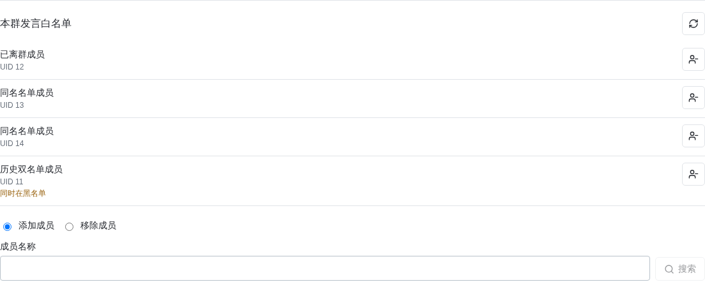
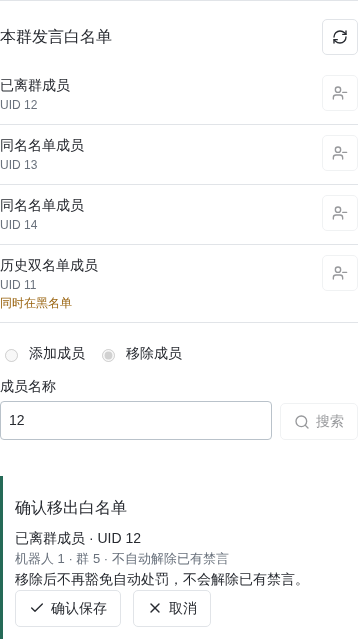
Guidance may explain how to configure a rule but never handles a real command twice.Keywords are group-only and available to ordinary members. Isolation is by robot account and group. Multiple literal synonyms, exact and contains matching are supported without regex or semantic guessing. Exact matches win; otherwise saved order decides one match. Default cooldown is thirty seconds per group/rule. Moderation keywords and automatic business replies have separate storage. Business replies and advertisements are not recalled after twelve seconds.
The server may separately grant a verified rules-only group manager a twenty-call
private administrator-guidance trial, using guidance_trial_preview and
guidance_trial. Confirmation binds the bot account, group, membership epoch,
verified UID/transport sender and grant version. This grants neither Plus nor group
AI, support editing or finance authority. Ungranted rules-only managers remain blocked.
The allowance is twenty model requests in total, not a daily refill. Menus, fixed
commands and provably unsent model requests do not spend calls; uncertain dispatched
requests retain their count. Existing trial cost budgets, daily limits and provider
hard-budget checks still apply. Send /chat privately, then ask a question; /exit
ends the session. The personal quota command shows the remaining total. Regranting,
revoking and restoring, or restarting cannot reset usage. Exhaustion stops model
calls; grant or manager revocation, pausing, departure, identity or epoch changes
invalidate old delivery authority, including pending answers.
The current group is implicit. Its authorized managers use:
关键词回复
添加回复 Name|精确|synonym1/synonym2|Confirmed reply
添加回复 Name|包含|synonym1/synonym2|Confirmed reply
修改回复 1 Name|精确|synonym1/synonym2|Confirmed reply
启用回复 1
停用回复 1
删除回复 1
确认回复 preview-token
定时广告
添加广告 Name|每日|09:00,18:00|Confirmed text and links
添加广告 Name|间隔|09:00-22:00|60|Confirmed text and links
修改广告 1 Name|每日|09:00|Confirmed text
启用广告 1
停用广告 1
删除广告 1
确认广告 preview-token
Every edit, deletion and enable/disable requires preview and confirmation by the same sender in the same conversation within two minutes. Changed revisions or authority invalidate the preview. New rules are disabled. No production copy, links or activation are fabricated.
For group management, first send 群列表 then 选择群 1; the same rule commands
operate only on that selected authorized group. Menu10 contains business rules.
Menu9 retains status, the already provisioned AI master switch, shared quota,
personal payer confirmation and read-only group knowledge. Old mode controls and
group-knowledge writes are rejected; stored content remains server-maintained.
Verified dedicated-support owners or legacy account editors can use the private "专属与账号业务客服" menu or:
客服设置
客服话术 Confirmed business wording
客服风格 简洁
客服长度 300
客服链接 https://confirmed-business-domain.example
客服知识
添加客服知识 Confirmed business information
删除客服知识 1
确认客服 preview-token
Fixed editing commands target the caller's own dedicated service first, or their
authorized legacy account. Selecting a public business never grants editing.
The selected management group never changes ownership. Editors cannot change models,
credentials, tools or administrator guidance. Finance is a separate private-only
entry shown to independent financial roles; AI has no settlement tool.
command_capabilities.py supplies help, menu permissions and guidance material.
In Help → Commands and permissions, separate group, private and server-only
tabs show required roles and confirmation requirements. Form screenshots use
offline fixtures and do not imply that a real group is authorized or advertising.
Select a group under Group Management → Rules, then use Keyword replies and scheduled messages. Plans support text/links and up to three rotating images, daily fixed times or intervals within a daily window, including windows crossing midnight. All times are Beijing-local.
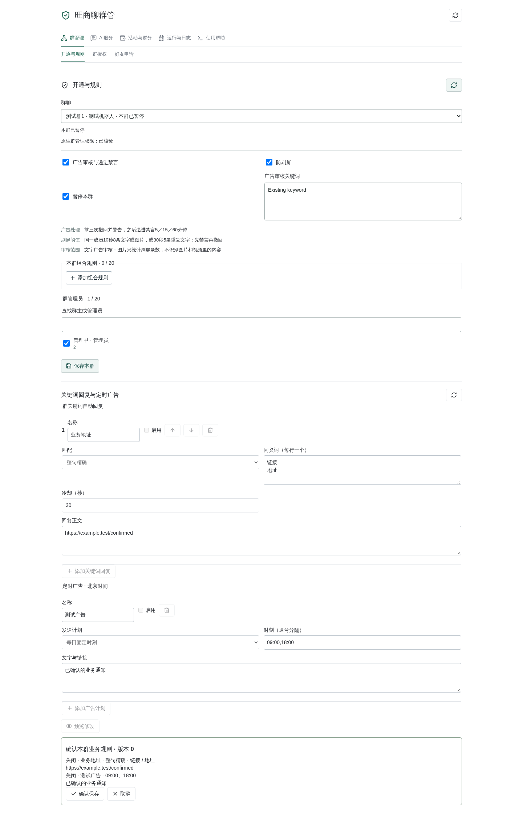
Schedules, cursors and send intents persist. Each occurrence is claimed once. Disconnects and restarts skip missed occurrences. Unknown receipts pause for review rather than retry. Pause, departure, editor revocation, missing native bot administrator rights, disabled group replies or removed proactive-send grants stop delivery. Departure removes exact-account/group configuration and cursors while retaining minimal delivery audit.
Only group/warm-group AI receives pc28_analysis; support and administrator
guidance do not. The plugin dynamically supplies the tool in an authorized group
request, independently of the persona's generic tool list. An empty generic list
on the warm-group persona does not block this dedicated path or authorize other
roles. Explicit PC28 requests require the tool call. If a supplier ignores it,
unchecked model text is discarded in favor of a fixed failure notice.
Requests select only pc28_analysis, with the per-turn protocol after persona
and history; no generic tools are enabled. Risk-only questions about guaranteed
wins or borrowing to recover losses need no forced lookup.
The user must explicitly ask about Canada28/PC28, or immediately
continue that established subject. Ordinary messages additionally require
autonomous participation; native mentions require mention replies. Idle tasks
never initiate predictions.
Fixed GET paths on https://pc28.world provide latest draws, history windows of
10/20/30/50, omissions, dragons and third-party next-draw forecasts. Requests obey
the sixty-per-IP-minute cap, caching and 429 backoff. Source attribution remains
internal for verification. See the
primary API documentation.
There is no local prediction algorithm. Empty, expired, resting or failed forecasts produce an explicit explanation and verified historical data or lookup guidance. No invented picks, next-draw probabilities or guaranteed outcomes. Group replies omit source domains and links, including model continuations and fixed failure templates. They retain a third-party-data disclaimer and the non-guarantee notice; internal source verification is unchanged.
A turn allows one tool call, two independently priced/countable/settled model
requests, and forty-five seconds total. Continuation reuses only the current
turn's cooldown eligibility, never quota, budget or permission exemptions.
If a second request cannot be admitted, a fixed template displays checked data
or the failure reason.
Truncated continuations and reasoning-only echoes use the same verified-data
template instead of partial drafts. History summaries count checked draws, not
predict future results. Both dispatched requests remain independently settled.
group_ai.py rechecks the native conversation snapshot before tool continuation
and delivery; deletion, switching or edits invalidate it. A dispatched continuation
with an unknown outcome blocks group AI as model_result_unknown, retaining its
billing state without another automatic call. Template fallback cannot bypass
that guard.
History counts and dragon classifications use deterministic summaries directly,
without a second model calculating totals or relabeling periodic/alternating
patterns as consecutive runs. These query types need one model request and retain
the randomness warning without exposing source links.
Native acceptance is confined to test group 1459282 and the existing bounded
three-account window. Missing native authority, budget or personal payer consent
is a blocker, not permission to expand grants. Restore temporary state and close
the window afterward. Do not change production group AI switches, finances or
connector lifecycles. Keep source, page, configuration and audit snapshots before
loading the plugin after regression and browser checks.
scripts/check_wsl_guidance_dialogue_live.py requires explicit --apply and
the existing online peers: 林夕 31846829 asks 小满 43506527 eight private
guidance questions. Each answer requires native receive/send receipts and the
peer's independent witness. A temporary exact-recipient send grant is restored
and the developer window closed. It does not use NG酱酱's guidance trial, grant
plans/group AI/finance authority, or retry unknown delivery.
scripts/check_wsl_warm_dialogue_model.py uses the currently bound persona,
configuration, real model and real PC28 API with isolated databases, simulated
group authority and local delivery. This is not native group-send acceptance.
Metering is local to the experiment; real supplier requests can still incur
charges. The one-minute cooldown remains, with at most sixteen model requests
per run. Use --cases for targeted retests; timeout or empty-forecast handling
does not prove normal data availability.
The existing three accounts for test group 1459282 were verified online.
The member picker excludes the robot itself; its two user entries do not indicate
that the robot left the group. Native robot administrator rights are missing,
group AI has not been provisioned by the server, and the payer has not personally
confirmed consent. Native conversations, nickname display and twelve-second recall
acceptance have therefore not been performed in this round. No native permission
promotion, surrogate payer consent, advertisement or real model request was used
to bypass these blockers. Complete the prerequisites before opening the existing
three-account controlled window.
Private source/configuration snapshots, read-only financial evidence and test
results are under /opt/backups/wsl-service-rules-20261020-jq1hZG; its ROLLBACK.md
describes the rollback entry. Restore only this release's reviewed files and
version-checked AI bindings, never whole databases, financial ledgers, subsequent
business changes or unrelated plugins. Reload only the moderation plugin through
the existing plugin management endpoint; do not restart the connectors.
On October 20, 2026, only the moderation plugin was hot-reloaded. One server guidance profile/persona and three account-specific support profiles/personas were created. Business knowledge, public links and editor grants remain unconfigured; no keyword or advertisement was automatically created or sent. Backend regression: 6,723 passed and 52 skipped. Frontend: 32 passed, with a passing type check. Compiled pages and live read-only data passed 390px/1440px checks. All 42 offline guides passed missing-image and overflow checks; four bilingual beginner/ownership PDFs were generated. Formal group configuration, 1,468 financial entries and the main process were unchanged; connectors were not restarted. The three native prerequisites above still block real-group acceptance. Passing automated tests must not be represented as completed native acceptance.